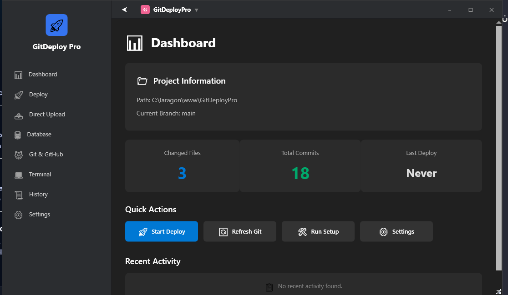
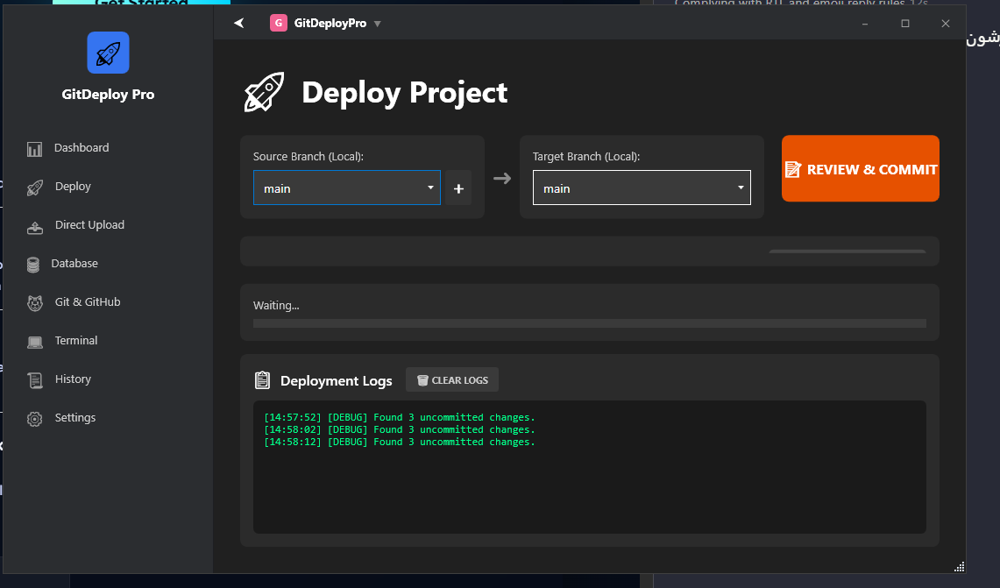
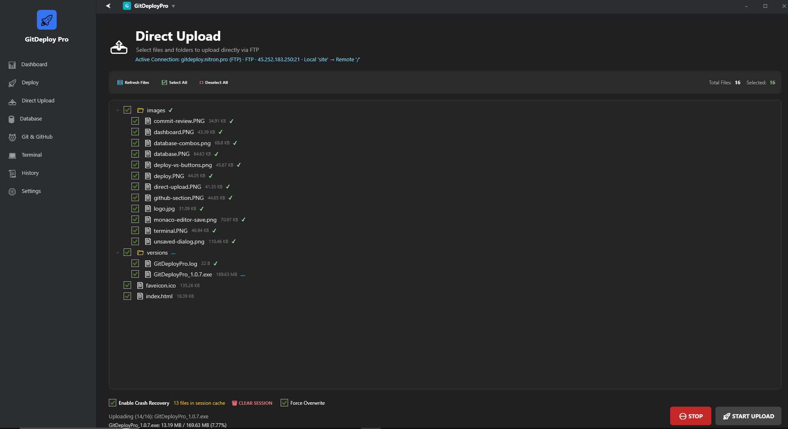
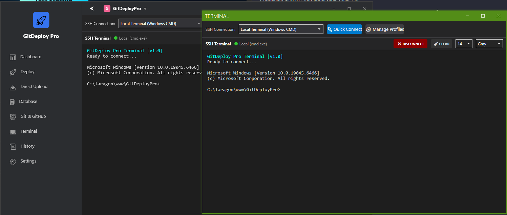
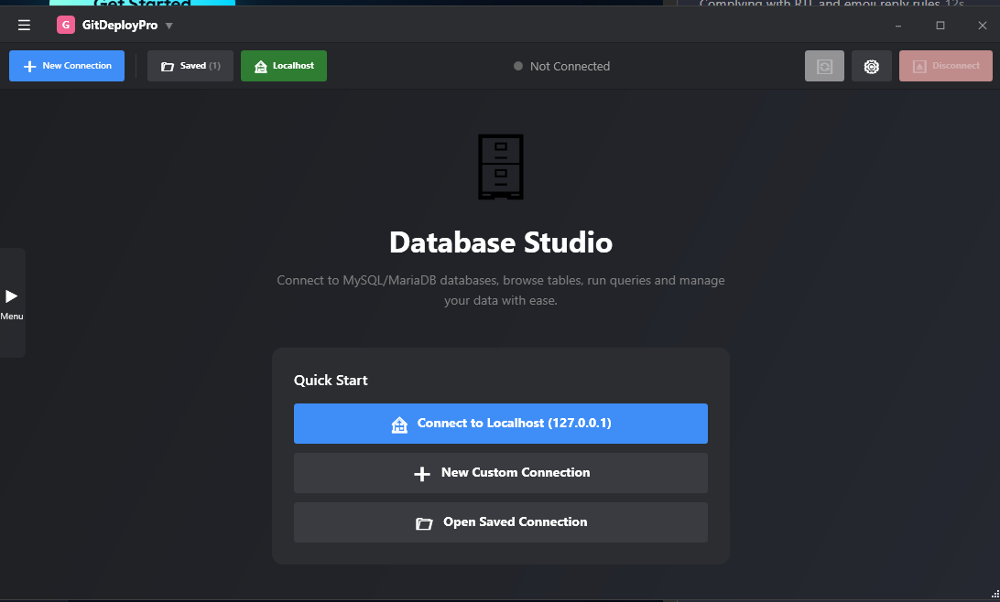
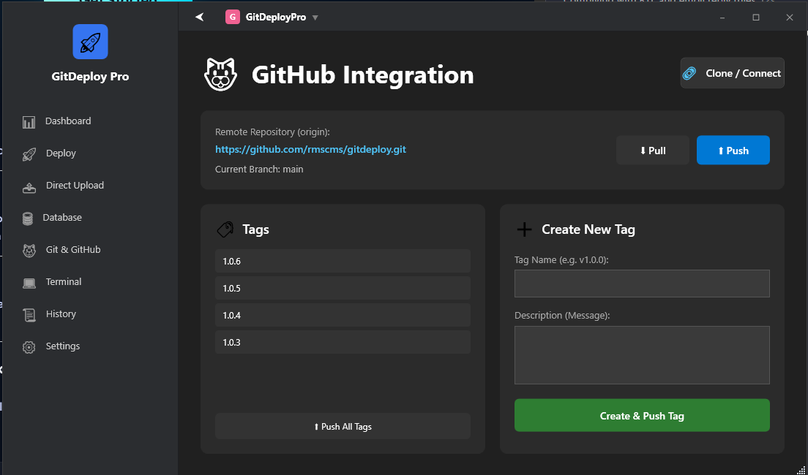

Git + Deploy
Branch compare, selective push, remote workspaces, and pop-out tabs for parallel environments.
GitDeploy Pro
Version 2.0 — Git sync, FTP/SFTP workspaces, terminals, databases, backups, Telegram + Cursor agent, and OpenVPN Connect keep-alive. Built for operators who live on Windows.

Capabilities
Ship, inspect, recover, and talk to your stack without leaving the desk.
Branch compare, selective push, remote workspaces, and pop-out tabs for parallel environments.
Browse, edit, sync, and recover files with conflict-aware workflows against live servers.
Session-ready shells and database tools for the incidents that never wait until morning.
Scheduler, validation stages, and history-driven reruns when integrity matters.
Project chats bridged to Cursor agent — warm ACP, outbound queue, model switch, resilience.
OpenVPN Connect profiles with startup connect and auto-reconnect when the tunnel drops.
Workflow
A straight operator loop — no dashboard clutter, no ceremony.
Project path, server profile, optional VPN keep-alive.
See local vs remote, stage what actually changed.
Deploy selected files, watch progress, verify on the rail.
Backups, agent chat, and reconnect when the network blinks.
Screens
Real surfaces from the Windows build. Click to enlarge.





Download
Self-contained Windows x64. Auto-update reads the same feed as this page.
Loading latest release…
Download GitDeployProDocs
Deep dives when you need more than a landing.
Architecture map and navigation for the full product.
Compare-select-deploy and remote editor patterns.
Scheduler lifecycle and integrity sampling.
Incident-friendly shell and SQL workflows.
Packaging and artifact guidance.
Common runtime issues and escalation checklist.